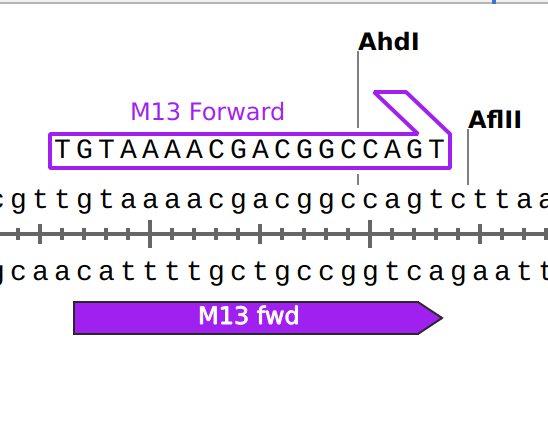

HW2_Sanger_SnapGene
Знайомство зі SnapGene

SnapGene - це програмне забезпечення для молекулярної біології. Воно пропонує швидкий і простий спосіб планування, візуалізації та документування ваших молекулярно-біологічних процедур
Опис завдання
- Завантажити SnapGene Viewer або встановити 30-денну trial версію SnapGene. Ознайомитись із можливостями програми
- Знайти плазміду в репозиторії SnapGene (Приклад - Плазміда pCAG-GFP, у якій EGFP є кодуючою послідовністю).
14 плазмід на вибір:
Знайти праймер для секвенування кодуючої послідовності і змінити назву праймера дописавши у кінці назви “_seq”. Якщо немає праймера, або ви його не знайшли, створіть власний за допомогою програми SnapGene. Якість праймеру для секвенування можете перевірити за допомогою онлайн-інструментів eurofinsgenomics або premierbiosoft або іншого онлайн ресурсу. Також можна скористатися готовим інструментом для дизайну праймеру sequencing-primer-design
Хід роботи
Після того як ви завантажили плазміду, вам потрібно знайти кодуючу послідовність - Ваш ген інтересу(Gene of interest - GOI). Тобто та ділянка ДНК, яку ви клонуєте або вже заклонована всередину плазміди. Для того щоб згадати будову плазміди скористайтесь довідниковою інформацією нижче:
- ori (origin) сайт для реплікації плазміди всередині хосту
- Ген резистентності до антибіотику для селекції бактеріальних клонів виключно з вашою цільовою плазмідою.
- Multiple Cloning Site (MCS) - короткий сегмент ДНК який містить групу рестрикційних сайтів призначених для клонування гену інтересу. Найчастіше MCS розташовують після(downstream) промоторної ділянки
- Ген інтересу (Insert) - Ген, промотор, або інший фрагмент ДНК вклонований у multiple cloning site
- Промоторна ділянка (Promoter) - ділянка, що ініціює транскрипцію вашого гену інтересу. Життєво важливий компонент для експресуючих векторів: визначає, в яких типах клітин експресується ген та кількість отриманого рекомбінантного білка.
- Селективний маркер (Selectable Marker) - Ген стійкості до антибіотиків дозволяє проводити селекцію в бактеріях. Однак багато плазмід також мають маркери для селекції в інших типах клітин. Особливо важливий у експресуючих векторах еукаріот, якщо потрібно проводити відбір клонів по селективному маркеру.
- Місце посадки для праймера (Primer Binding Site) - Коротка одноланцюгова послідовність ДНК, що використовується як початкова точка для ПЛР-ампліфікації або секвенування. Праймери можна використовувати для верифікації послідовності плазмід.
Ілюстрація плазміди та її елементів: 
Після того як вий знайшли ваш ген інтересу на плазміді, потрібно вияснити скільки праймерів потрібно дизайнити для того щоб повністю покрити всю довжину гену інтересу.
Орієнтовна довжина фрагментів секвенування складає 500-900 bp в залежності від вашого набору реактивів та секвенатора. У нашому сетапі ми орієнтуємось на довжину фрагменту 500-600 bp. Якщо ви не можете покрити довжину гену інтересу одним праймером, необхідно здизайнити другий праймер з іншої сторони(reverse primer). Зверніть увагу що довжина ріду секвенування за Сенгером залежить від полімеру який ви використовуєте та довжини капіляру (наприклад 50 або 80см). Чим більша довжина капіляру, тим більше фрагментів може краще розділитись в капілярі і відповідно більше фрагментів термінального ПЛР синтезу може зчитати пристрій. Для прикладу, який вигляд має капіляр для ABI3130xl можете знайти тут.
Зверніть увагу, що праймер повинен дивитись у сторону вашої кодуючої послідовності, У SnapGene це відображається як фіолетова стрілка у відповідному напрямку, де початок стрілки вказує на напрямок синтезу:

Після знаходження такого праймера необхідно дописати в кінці назви праймера “_seq” і зберегти файл у форматі “*.dna”. Результатом роботи є .dna файл із збереженим праймером для секвенування.